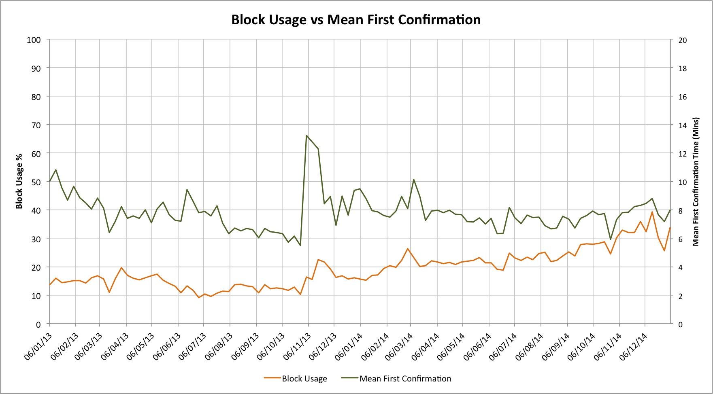
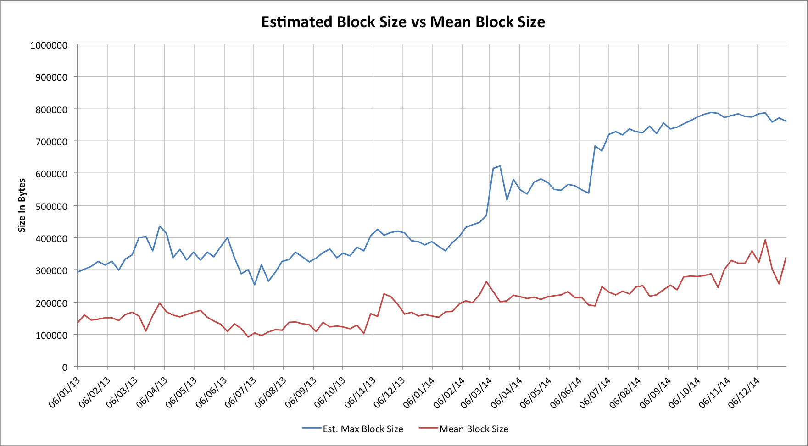
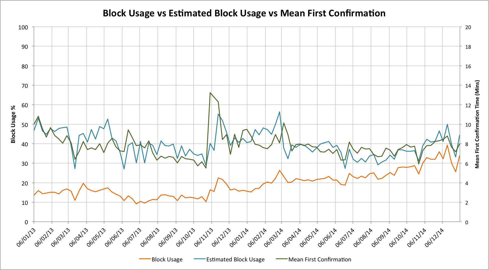

Dave Hudsonhashingit.com |
It’s well described how Bitcoin has a one Megabyte block limit; it’s defined in the Bitcoin Core source code. The knowledge of that 1 Mbyte limit has even served in some of my analysis such as “The future of Bitcoin transaction fees?", “Bitcoin traffic bulletin” and “7 transactions per second? Really?". Turns out that I was wrong; in practice this limit is actually quite a lot smaller!
Back in “Bitcoin traffic bulletin” we saw how first transaction confirmation times were highly dependent on how full mined blocks were. Essentially anything larger than 30% started to show noticeably slower confirmations than the default 415 seconds that is seen when the blocks are pretty-much empty. In fact the 415 second number can be larger or smaller for both statistical noise reasons, or if the global hash rate is increasing/decreasing (shorter if it’s increasing, longer if it’s decreasing).
There was a slight puzzle for me; the older data seemed more erratic than I’d have expected, but at the time I’d presumed that this was down to changes in hashing rates and that the older versions of the network had had longer latencies and more jittery propagation.
A couple of days ago, however, I spotted something very odd while watching a series of blocks (block heights 338939 to 338942); they were all the same size (731 kbytes), but that size wasn’t anywhere near 1 Mbyte. The 731 kbytes size seemed pretty weird too, until I realized that this was a classic computer science numerology problem. The Bitcoin block size limit is 1,000,000 (1M) bytes, but typically memory sizings aren’t done in powers of 10, but instead in powers of 2, so 1 Mbyte of memory is actually 1048576 bytes. For anyone old enough to remember PC floppy drives I leave you to actually work out the capacity of a 1.44 Mbyte floppy disk (I’ll give you a hint, it needs you to use 1k bytes and 1024 bytes :-)). 731k = 731 * 1024 = 748,544 bytes; this is actually 750k bytes minus a small amount.
Given this puzzle I generated some new data. It looks at the theoretical block usage vs the mean first confirmation time. Let’s look at it:

In the earlier assessment I’d noted that below a 30% block usage level that the block utilization shouldn’t really make much difference to the confirmation delay, but in this graph the spikes in one are clearly quite highly correlated with the other. Correlation and causation are two different things but, even so, this is pretty surprising!
If our actual maximum block size limit was actually somewhat less than 1M bytes, though, the estimate block usage numbers would be incorrect and would need to be scaled up!
Why would 750k bytes be being used instead of 1M bytes? If one or more miner was systematically generating smaller blocks than the theoretical maximum then that would definitely affect all of my earlier estimates on block utilization, mean confirmation times and block scarcity for mining fees.
A little digging around in the Bitcoin Core git repository turns out to be very useful! The Bitcoin protocol implements a hard consensus limit of 1M bytes on blocks, but actually has a default size for miners that is actually smaller than this. Individual transaction selectors (generally mining pool operators) can set the value to anything up to 1M bytes, but there are some defaults.
Since v0.9.0 (2014-03-09) the default maximum block size to be mined is 750k bytes, with up an addition 50k bytes for high priority transactions (there aren’t many of these). A little more investigation also showed that v0.8.6 had had the default maximum block size at 350k bytes and prior to that the value had been 250k bytes!
If we were mining, why might we want to use smaller block sizes? Well, if we need to announce a mined block to the network it takes time. If we assume we need to tell 8 peers about any new block and our block is 250k bytes in size, then that’s 8 * 250k * 8 = 16M bits. If our miner had a DSL line with only a 1 Mbps uplink then by the time we’ve added network protocol overheads then this block will take about 20 seconds to transmit! That’s a very long time, especially in situations where two blocks are found at almost the same time. If the block had been 1M bytes then it would have taken 80 seconds! In practice large mining pools will have much faster network connections than this now, but network bandwidth still plays an effect.
Back to our original problem, however! The problem with miners selecting a smaller maximum block size is that if the network is heavily loaded then our miner is effectively leaving transactions waiting when they declare a block “full” at some level below 1M bytes. Far from the 3.2 transactions per second that we thought the network could sustain in “7 transactions per second? Really?", every miner imposing a 750k bytes limit would mean the network capacity was actually only 2.4 TPS!
With good historical data we can estimate the actual block size limit for various miners. If we look at the largest block mined by specific pools in given weeks we can estimate the upper limits that they were actually using. If we multiply these by the fractions of the numbers of blocks each found then we can estimate the actual block size capacity of the network over time:

This isn’t a perfect approach. Smaller pools will see their results skewed because they don’t find enough blocks, but the effect is interesting. Over the last two years the effective block size has steadily been growing, and if anything has, until a few months ago, slightly outpaced the growth in actual block usage.
The raw data is also a source of some interesting discoveries. Individual pool operators sometimes try to optimize things in interesting (and quite different) ways. Here are some examples for some of the larger pools:
Let’s look at our original one but now with the estimated block usage too:

This is quite striking, even more so if we realize that in late 2013 and early 2014 we were seeing huge hash rate expansions which in turn reduce the confirmation times as blocks were being found much more quickly than one per 10 minutes. The higher effective block usage (above 30%) also goes a long way to explaining why our original chart was much more highly correlated than we expected.
The implications of these results are intriguing. We can certainly see that the current network can’t actually handle even the modest transaction rates we originally assumed, although it’s easy for mining pool operators to adjust for this. That this is up to the majority of mining pool operators is potentially the most interesting realization.
Back when GHash.IO was approaching 50% of the network there was a lot of concern about what this meant for the potential to double-spend, etc. In practice, such a risk seems unlikely as that would damage the very ecosystem that supports mining. A subtlety, however, is that GHash were only actually allowing 350k bytes per transaction. Where they controlled 40% of the total block space they only actually allowed 35% of that 40% to be used; a net loss to the network of 26% of its total theoretical capacity. The jump when they switched to 750k byte transactions is actually quite marked in the second chart!
The confirmation time statistics suggest that even if, mid 2014, they had tried to use relative scarcity to select higher fee transactions it probably would have had little impact. The next large pool, if in a position to dictate block scarcity, has the potential to be much more disruptive as a result of transaction selection.
There is also an interesting implication for Gavin Andresen’s proposed protocol fork that would allow larger blocks. If the majority of mining pools (by total capacity) choose to ignore some new upper limit then the effect will be to retain a much smaller overall cap. Miners may, indeed, want to do exactly this as block scarcity is the only thing that has any reasonable prospect of helping them achieve higher transaction fees.
For observers of the Bitcoin network we do seem to have a new health indicator: A periodic report on the mean, minimum and maximum block sizes mined by various pools and their associated statistical likelihoods could be very interesting.
Many thanks to @oocBlog (author of the “Neighbourhood Pool Watch” blog; well worth reading every week). After I spotted the trends that led me to speculate about block size limits he generated the raw data that I needed to perform my analysis.
Data for this article was sourced via blockchain.info
When I came to write this article I also wrote a C++ application that would combine all of the raw data into a form I could use with Excel to generate the charts. The source code, and the source CSV data files can be found on github: https://github.com/hashingitcom/the_myth_of_the_megabyte_bitcoin_block